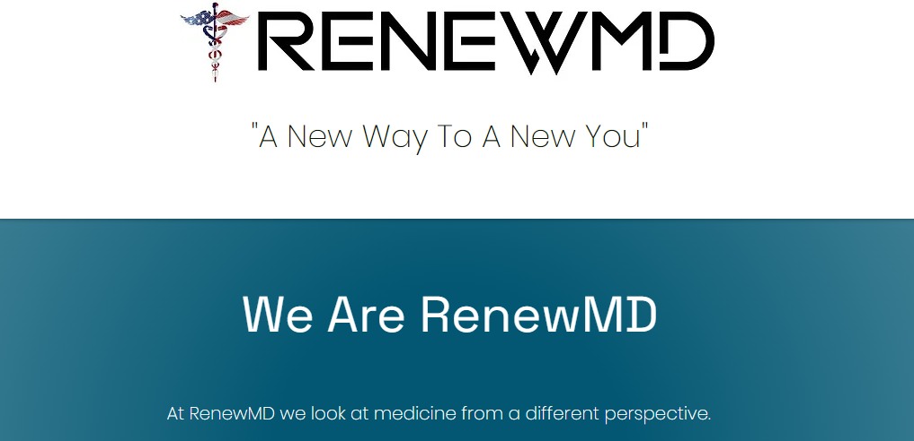

Hello World!
and welcome to my small corner of the Internet.
Projects
- 
-
Renew MD Business Site
Web Developement Project
Over the past six months, I have been working with the proprietors of an up and coming health spa. They specialize in providing customers vitamin supplements, HRT treatments, and weight loss treatments. This site is built to provide information on all three locations located in Mississippi, the services they offer, and forms so guests can submit a request for a consultation or set an appointment at one of the physical locations. As the business continues to grow, so will the website to fit the business's needs.
-
Interactive Election Map
Javascript Project
This is an interactive map of the United States. It is simply a mock election map displaying two candidates, election results by state, and who won that state as well as the general election. Hovering over each state color codes it with its respective winner and displays individual statistics about each state.
-
Rogue Pickings Website
HTML & CSS from Photoshop Design Comp
This is a simple one-page site showcasing a fictional delivery service for fresh ingriedients. This site was built from the ground up based on a Photoshop design comp. Sizing, colors, and fonts were all derived from the design comp, as well as text and block elements.
-
Unplugged Retreat Customer
HTML 5 & CSS Website
A clean and elegant buisiness page, this site showcases various HTML and CSS fundamentals that I have learned throughout my education. The HTML and CSS provides a great foundational template for other projects, as it works as a great reference guide. Comments included. This site is also where I started making my projects responsive for mobile, tablet, and desktop.
-
Steele Photo Grid
HTML & CSS Photo Portfolio
This is a great example encompassing what I have learned about the box model. While designing this page, I also learned about great resources for images, fonts, layouts. This is also where I was introduced to resposive webpages. Changing the window size on the desktop also adjusts the layout and sizing accordingly.
-
Magic 8-Ball
Interactive Javascript Toy
Here is the classic 50s toy that will give you all the answers! Just ask a question and the 8-ball will give you an answer. This was coded using Javascript to prompt the question, do a shake animation, and display one of nine different answers. Try it multiple times!
About Me
I am an aspiring developer from Mississippi.
I discovered my passion for web development while pursuing a degree at Mississippi State University. During my time at the University, I learned a lot about software developement including architecture, design, deployment, testing, version control, databases, and project management.
Fast forward a few years, and I now have my Bachelor's in Software Engineering. I found that I love creating clean and elegant web pages and testing code. For me, coding and designing web pages is like putting together a puzzle. By creating solutions and solving problems, it stimulates the imagination and keeps me sharp. But not only did I learn the software aspect of computers , but also adopted a computer building hobby in my free time!